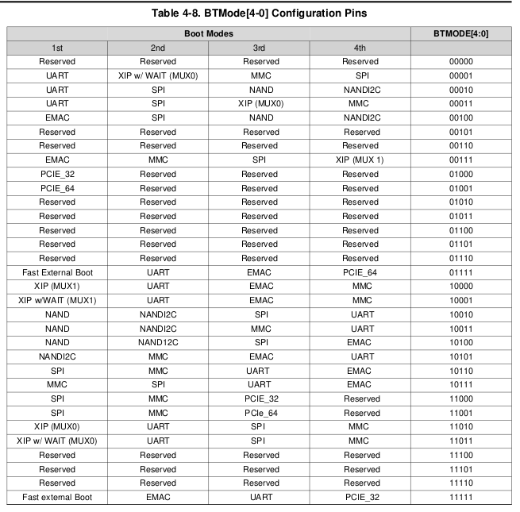

Boot and ARM shell
Boot process
The ARM boot ROM looks for the first-stage bootloader (
MLO) in the SPI flash and on the SD card, then loads and runs it from internal memory (the DDR memory is not active yet).MLO(built with U-Boot) enables the DDR memory and networking, then loads the second-stage bootloader into DDR.u-boot.binloads and starts the Linux kernel.The kernel (
uImage) mounts the root filesystem from the second SD partition and starts the services: mDNS, SSH, web server and Tuber.
Memory and SD card layout:
SPI flash: 32 MB
AM3871 ARM internal RAM: 128 kB; external DDR3: 2 GB
SD card:
FAT32 partition (30 MB):
MLO(~77 kB),u-boot.bin(~179 kB),uImage(~4 MB)ext partition (350 MB): Linux root filesystem
Boot mode switches
The ARM boot source is set by DIP switch SW1, positions 1 to 5, which drive BTMODE[0] to BTMODE[4]. “ON” is a binary 1.


The table lists the bits from BTMODE[4] to BTMODE[0], left to right.
The default is BTMODE[4:0] = 10110 (SW1.1 OFF, SW1.2 ON, SW1.3 ON, SW1.4 OFF, SW1.5 ON). The
boot order is then SPI, MMC/SD, UART, EMAC: a valid bootloader in SPI flash takes precedence.
To boot from the SD card first even when the SPI flash is programmed, use BTMODE[4:0] = 10111,
i.e. turn SW1.1 ON.
Logging in to the ARM
The ARM runs an SSH server. Log in as root; no password is required, as the boards are
expected to be on an isolated subnet. The ARM Linux only offers an old key-exchange algorithm,
which must be enabled explicitly:
ssh -oKexAlgorithms=+diffie-hellman-group1-sha1 root@<host_or_ip>
The option can also be set for these hosts in ~/.ssh/config. See
https://www.openssh.com/legacy.html.
To find a board’s address:
iceboardNNNN.local, where NNNN is the serial number (e.g.iceboard0181.local), if mDNS works on the hostavahi-browse _tuber-jsonrpc._tcp --resolveoravahi-discoveran
nmapscan of the subnetthe DHCP server lease table
SPI flash
To inspect the SPI flash from the ARM shell:
hexdump -C -vn 512 /dev/mtd0
mtd0 holds the SPI first-stage bootloader, if one is used (e.g. a network-boot bootloader).
mtd4 appears to hold IPMI board information.
The SPI flash is small. It can hold a bootloader that then boots from the network. Example of programming one:
/usr/bin/flashcp /tmp/u-boot.min.spieth.spi /dev/mtd0
Resetting a single board
If a board does not answer pings when the array is initialized, and the network is sound, its ARM did not boot. The crate can be power-cycled, or that slot can be power-cycled from another board in the same crate.
FPGAArray and fpga_master list missing boards with whatever identity they have: hostname
or IP address, serial number, and (crate, slot). Slot numbers in that list are zero-based.
Create an array that includes the crate, talking to ARM only so the FPGAs are not programmed.
--ignore_missing_boards is required so the missing board does not abort the call:
ipython
run -i pychfpga/fpga_array.py bp16 <crate serial> --init 0 --prog 0 --ignore_missing_boards
A working board in the crate, by IP, serial or crate, also works. See Interactive operation.
Pick a board that did boot:
i = ib[0]
ib is the list of boards in the array. Slot N for set_power_on_slot is one-based
(crate slot 1–16). If the missing board was reported as zero-based slot s, use N = s + 1:
i.set_power_on_slot(N, False) # power off slot N
i.set_power_on_slot(N, True) # power on slot N
After up to about 60 seconds the ARM should boot and answer pings.